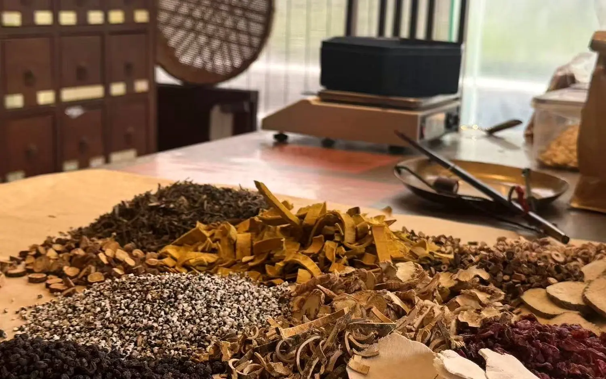

Chinese medicine · Whole-body balance
Beyond one symptom at a time — a UK guest's first holistic TCM consultation

- Guest
- L., a UK expatriate in Shanghai
- Age
- Prefers not to disclose
- Visiting from
- United Kingdom
- Main concerns
- Several scattered minor imbalances rather than one single issue; cold hands and feet; wanting a whole-picture view
- Arranged by HYA
- Full TCM consultation and acupuncture with Dr. Henri
What brought them to us
L. did not arrive with one clear complaint. Instead, several small things felt not quite right or in balance — including persistently cold hands and feet, and mood-related patterns she felt were connected to how her body was behaving. Her experience of single-symptom consultations elsewhere had never joined those dots. She was also initially a little apprehensive about seeing a male physician for female-specific concerns.
What we arranged
We arranged a full consultation and acupuncture treatment with Dr. Henri, with at least thirty minutes of one-to-one consultation time. The emphasis was on how her symptoms related to one another rather than treating each in isolation, with jargon-free explanations throughout, and a written summary of dietary and lifestyle guidance afterwards.
What happened
L. left feeling informed and understood, and said the doctor could see a lot of different things altogether and explain how they connect. Her initial apprehension dissolved entirely. She was also surprised by how quickly the appointment could be arranged, having expected a wait of weeks — and left interested in follow-up sessions and a preventive health check.
In their words
I feel like he really could just see a lot of different things altogether and then just very informative. I really feel like he knows what he's talking about.
Listening to him and his explanations, the quality of the information, it makes you feel like, okay, I understand.
I'm a little apprehensive to see a male doctor about, for example, a painful period. But actually, I didn't feel that at all. I felt he really understood.
It makes a big difference.
One guest's personal experience, shared with permission. Individual experiences vary and outcomes are not guaranteed. HYA Wellness curates and coordinates; all care is delivered by licensed partner practitioners. Chinese medicine is intended to complement, not replace, conventional medical care.